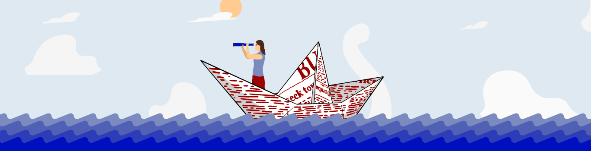

Decálogo de un editor digital

Principios y bases que debe tener un editor digital para construir una cultura digital latinoamericana descolonizada
1. Es necesario entender el contexto en el que se desarrolla una comunidad, grupo o población para así trabajar junto a ella, no sobre ella
2. Experimentar con los posibles formatos, plataformas y lenguajes que permitan crear contenidos o lugares diversos y creativos
3. Preguntarse una y otra vez por las necesidades del grupo con el que se va a trabajar
4. Crear objetivos acordes a los conocimientos y quehaceres de la comunidad
5. Dialogar con diversos pensamientos y conocimientos sobre el mundo digital y los contextos latinoamericanos
6. No dar nada por sentado, se debe estar abierto a explicar las cosas una y otra vez
7.
chao, mundo